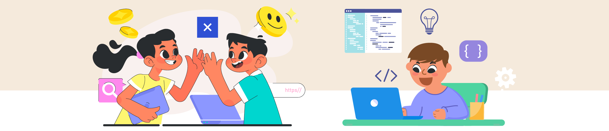
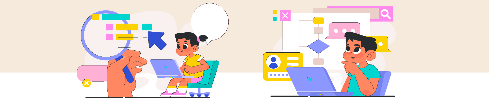
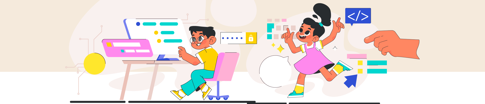
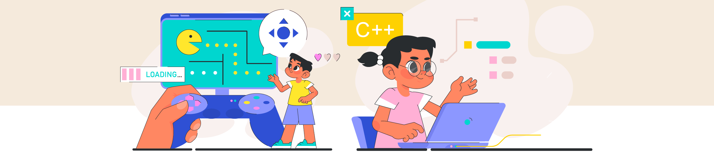
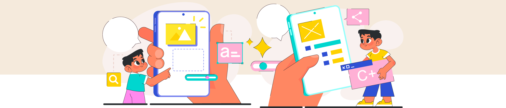

Objetivo General del Proyecto (Sección 7): Desarrollar en los estudiantes de Grados 4° y 5° habilidades básicas de programación y pensamiento computacional mediante la creación de historias interactivas o videojuegos narrativos en Scratch, aplicando conceptos matemáticos para la lógica, el control y la interactividad, y fomentando la expresión creativa, la narrativa digital y el trabajo colaborativo.

Objetivos Específicos de Aprendizaje (Vinculados a EBC y Habilidades S.XXI - Sección 8)
T/ETecnología e Ing. (Scratch):
- Identificar y utilizar componentes básicos de Scratch.
- Aplicar bloques (movimiento, apariencia, sonido, eventos).
- Utilizar estructuras de control (bucles, condicionales simples).
- Introducir y utilizar variables simples.
- Diseñar algoritmos (secuencias lógicas).
MMatemáticas:
- Aplicar coordenadas (x, y) para posicionar/mover sprites.
- Utilizar ángulos para dirección/rotación.
- Aplicar operaciones numéricas básicas para variables.
- Identificar y crear secuencias lógicas y patrones.
- Interpretar y utilizar números aleatorios (básico).
LLenguaje (Integración Fuerte):
- Crear narrativas coherentes (inicio, nudo, desenlace).
- Desarrollar personajes con características.
- Escribir diálogos y textos para la historia.
- Presentar oralmente sus creaciones.
AArtes (Integración Fuerte):
- Diseñar apariencia visual de personajes/escenarios.
- Seleccionar/crear elementos gráficos y sonoros.
- Expresar ideas y emociones visualmente.
SocCiencias Sociales:
- Trabajar colaborativamente en planificación/desarrollo.
- Respetar y valorar ideas de compañeros.
- Reflexionar sobre mensajes/temas en historias.
Habilidades del Siglo XXI Desarrolladas
Este proyecto busca fomentar prioritariamente:
Fases y Actividades Detalladas (Metodología ABP - Secciones 9 y 10)
Fase 1: ¡Contemos una Historia! (Inmersión y Planificación Inicial)
- Presentación (narración interactiva, Scratch), Lluvia de ideas, Formación equipos, Definición idea central.
- Actividad Matemática: Discutir secuencia lógica de historia (inicio, nudo, desenlace).
Fase 2: Conociendo Scratch y Diseñando la Trama (Investigación y Diseño)
- Tutoriales Scratch (movimiento, apariencia, eventos). Creación guion/storyboard. Diseño personajes/escenarios (bocetos).
- Actividad Matemática/Tecnológica: Identificar necesidad de coordenadas/ángulos.
Fase 3: ¡Manos al Código! - Fundamentos (Creación Inicial)
- Crear sprites/fondos. Programar movimientos básicos, diálogos, cambios disfraz/fondo. Introducir bucles.
- Actividad Matemática: Práctica con coordenadas y ángulos en Scratch.
Fase 4: Dando Vida a la Interacción (Desarrollo y Pruebas)
- Introducción a condicionales y variables. Programar interactividad (respuestas a clics, teclas, colisiones). Pruebas y depuración.
- Actividad Matemática/Tecnológica: Usar operadores matemáticos para actualizar variables.
Fase 5: Pulido, Presentación y Reflexión (Evaluación y Difusión)
- Finalizar proyectos (sonidos, detalles). Preparar presentación. Exposición ("Festival Narradores Digitales"). Reflexión.
11. Recursos Necesarios
- Tecnología: Computadores con Scratch e internet. Proyector.
- Materiales de Papelería: Papel, lápices, colores, marcadores.
- Humanos: Docente facilitador.
- (Opcional): Micrófonos, tabletas (Scratch Jr.).
12. Evaluación del Proyecto (Formativa y Sumativa)
Evaluación Diagnóstica: Preguntas iniciales (historias, juegos, Scratch).
Evaluación Formativa: Observación, revisión guiones/storyboards, revisión progreso Scratch, desafíos programación, autoevaluación/coevaluación.
Evaluación Sumativa: Proyecto en Scratch, Presentación, Rúbrica, (Opcional) Cuestionario/actividad práctica.
13. Producto(s) Final(es) o Evidencias Tangibles
- Historia interactiva o videojuego narrativo simple en Scratch.
- Guiones o storyboards.
- Diseños (bocetos) de personajes y escenarios.
- Presentación oral y/o digital del proyecto.
- (Opcional) "Estudio de videojuegos/historias" virtual.
14. Vinculación con el Contexto y la Comunidad
- Temas basados en contexto local, cuentos tradicionales, problemas sociales.
- "Festival de Narradores Digitales" abierto a comunidad escolar.
- Crear historias que enseñen algo a otros.
Rúbrica de Evaluación Grupal (Sección 15)
| Criterio | Nivel Bajo (1 pt) | Nivel Básico (2 pts) | Nivel Alto (3 pts) | Nivel Superior (4 pts) |
|---|---|---|---|---|
| Aplicación de Conceptos de Programación (Scratch) | El proyecto tiene errores graves de lógica, usa muy pocos bloques adecuados o no es funcional. Muestra mínima comprensión de Scratch. | El proyecto funciona parcialmente, usa algunos bloques básicos correctamente pero con limitaciones en la lógica o interactividad. | El proyecto es funcional, aplica adecuadamente varios bloques de Scratch (secuencias, bucles, básicos condicionales) y logra una interactividad básica. | El proyecto es completamente funcional, demuestra un uso creativo y eficiente de diversos bloques (incluyendo variables, condicionales complejos, eventos) logrando una interactividad rica y coherente. |
| Aplicación de Conceptos Matemáticos | No hay evidencia clara del uso de conceptos matemáticos o se aplican incorrectamente afectando la funcionalidad. | Se intentan usar algunos conceptos matemáticos (ej. coordenadas) pero con errores frecuentes o de forma muy limitada. | Aplica correctamente conceptos matemáticos básicos (coordenadas, ángulos, secuencias lógicas) para controlar elementos y el flujo. | Aplica con precisión y de forma significativa conceptos matemáticos (coordenadas, ángulos, variables, secuencias, lógica) enriqueciendo la funcionalidad y/o la narrativa. |
| Creatividad y Diseño Narrativo/Visual | La historia es muy simple, poco original o incoherente. El diseño visual es básico o descuidado. No hay diálogos o son deficientes. | La historia tiene una estructura básica pero es predecible o poco desarrollada. El diseño visual es funcional pero simple. Diálogos mínimos. | La historia es coherente y tiene elementos creativos. El diseño visual es adecuado y apoya la narrativa. Diálogos funcionales. | La historia es original, creativa y bien estructurada. El diseño visual (sprites, fondos, colores) es atractivo, detallado y potencia la narrativa. Diálogos bien elaborados. |
| Colaboración y Trabajo en Equipo | El equipo muestra poca colaboración, conflictos no resueltos o distribución desigual del trabajo. No se cumplen roles. | Colaboración limitada, algunas dificultades en la comunicación o el cumplimiento de tareas. Roles poco definidos o cumplidos. | El equipo trabaja de forma colaborativa la mayor parte del tiempo, se comunican y distribuyen tareas. Roles mayormente cumplidos. | El equipo demuestra excelente colaboración, comunicación efectiva, apoyo mutuo y una clara distribución y cumplimiento de roles. Todos contribuyen significativamente. |
| Presentación y Comunicación del Proyecto | La presentación es confusa, incompleta o no explica el proyecto. Poca participación del equipo. | La presentación es básica, explica superficialmente el proyecto con algunas omisiones. Participación desigual. | La presentación es clara, explica bien el proyecto, su funcionamiento y los aprendizajes. La mayoría del equipo participa. | La presentación es atractiva, clara y exhaustiva. Explican con detalle el proceso creativo, técnico y los aprendizajes. Todo el equipo participa activamente. |
| Habilidades S.XXI (Pensamiento Computacional, Resolución Problemas) | No se evidencia intento de descomponer problemas o depurar errores. La lógica del programa es muy deficiente. | Se observan intentos básicos de secuenciación pero con dificultades para resolver problemas de programación o depurar. | Aplica principios de pensamiento computacional (secuencias, bucles) y logra resolver problemas de programación sencillos. | Demuestra un sólido pensamiento computacional (descomposición, algoritmos, depuración) y resuelve problemas de programación de forma efectiva y creativa. |